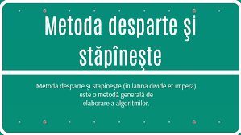

Definiție: Metoda Desparte și Stăpânește (Divide and Conquer) este o tehnică de proiectare a algoritmilor care implică împărțirea problemei în subprobleme mai mici, rezolvarea acestora și combinarea soluțiilor lor pentru a obține soluția finală.
Metoda Desparte și Stăpânește este o tehnică eficientă utilizată în rezolvarea unor probleme complexe. Principiul de bază constă în împărțirea problemei principale în subprobleme mai simple, rezolvarea acestora în mod independent și apoi combinarea rezultatelor pentru a obține soluția finală.
Principiul metodei Desparte și Stăpânește: • **Divide:** Problema mare este împărțită în subprobleme mai mici. • **Conquer:** Subproblemele sunt rezolvate în mod recursiv. • **Combine:** Soluțiile subproblemelor sunt combinate pentru a obține soluția finală.
